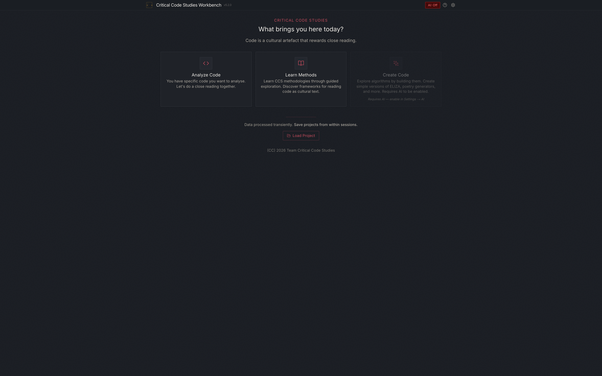
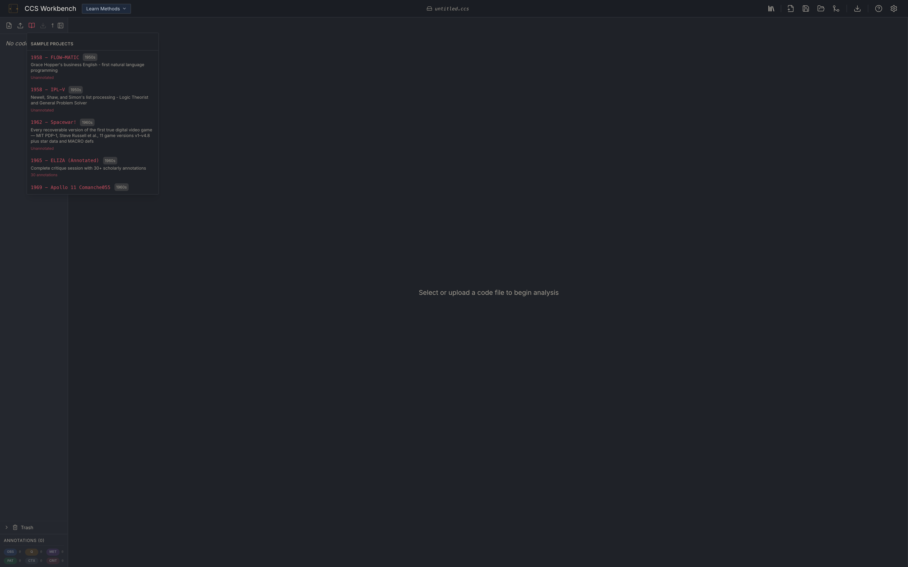
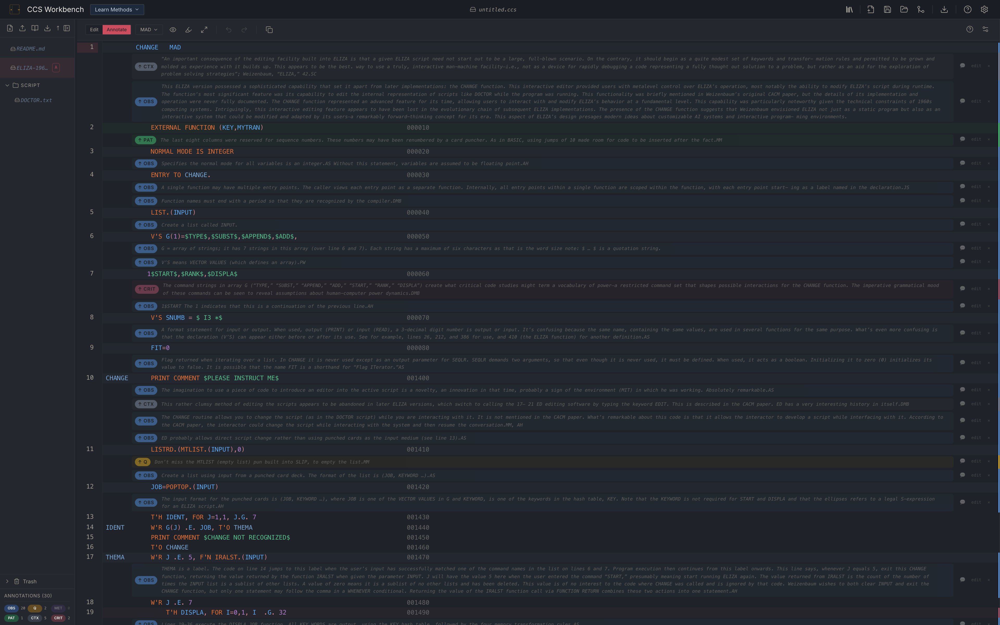
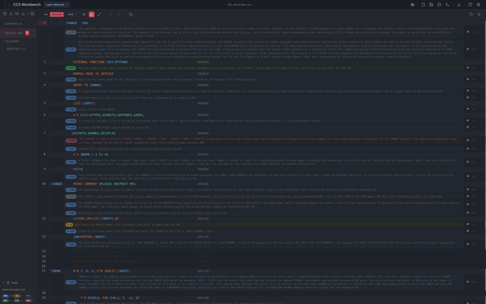
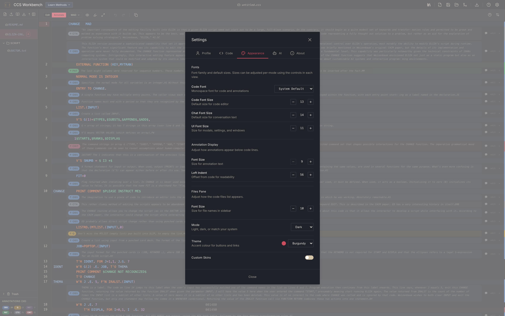

1 What it is
The Critical Code Studies Workbench is a browser-based IDE for the close reading of software as a cultural artefact. A user opens a code file (their own, or one of the built-in historical samples), reads it line by line, and attaches typed annotations OBSQMETPATCTXCRIT to specific lines or line ranges. Projects save as .ccs files (JSON internally) and merge additively between collaborators without a backend. An optional AI co-reader, configured by the user, can suggest annotations or hold a dialogue in the Critical Code Studies register.
2 Quick start
Node 20+ required. No account, no server dependency.
git clone https://github.com/Computational-Hermeneutics/CCS-WB-classic.git
cd CCS-WB-classic
npm install
npm run dev
# open http://localhost:3000
On first load the app opens on a mode chooser. All three modes work offline; the Create mode and the AI co-reader additionally require an AI provider configured in Settings ▸ AI.

3 The three modes
Analyze Code (Critique)
For a user who already has code they want to read closely. The three-panel IDE opens on the user's file, with the file tree on the left, the code editor in the centre, and (when AI is on) a chat / guided-prompts panel on the right. Workflow:
- Click Analyze Code on the landing page.
- Use Load code file in the files pane to open a file from disk, or Load sample code to pick one of the built-in samples.
- Click a line (or drag a range) to attach an annotation. Pick a type (Observation, Question, Metaphor, Pattern, Context, Critique) and write the body.
- Save the project with Save session (writes a
.ccsfile to disk).
Learn Methods (Interpret)
For a user learning the Critical Code Studies methodology itself. Same IDE, same annotation layer, but the right panel opens a methods guide and an annotation guide rather than a chat, and the sample corpus is foregrounded as the first thing to open. The guided prompts here are scaffolded for a beginner.

Create Code (Vibe coding)
For a user who wants to understand an algorithm by building a simple version of it (an ELIZA-shaped chatbot, a poetry generator, a cellular automaton). Requires AI to be enabled in Settings ▸ AI. Workflow is iterative: ask for a scaffold, run it, read it, revise. Create keeps a version history inside the project; the Transfer to Critique action moves a finished version into the Analyze workbench for close reading.
4 Worked example: close reading of ELIZA (1965)
The shipped ELIZA sample is distributed with thirty scholarly annotations as a worked example of a Critical Code Studies reading. To open it:
- From the mode chooser, click Learn Methods.
- In the files pane, click Load sample code (open-book icon).
- In the panel that appears, click the tile labelled 1965 · ELIZA (Annotated).
- In the file tree that appears, click ELIZA-1965b.mad.

Try the Focus mode toggle in the editor header (the highlighter icon): unannotated lines dim and the right-margin colour bars brighten, so a dense reading can be navigated by annotation rather than by line.

5 Configuring the AI co-reader
The AI is off by default and is strictly opt-in. When off, the Workbench does not call any external service and the AI chat / sparkles buttons stay disabled. To turn it on, open Settings ▸ AI and pick one provider from the list.

Local / free: Ollama (recommended first)
Ollama runs an open-weights model locally on the user's own machine. Private, free, no key.
- Install Ollama from ollama.com and start it (
ollama serveis the daemon; the macOS app starts it automatically). - Pull a model:
ollama pull llama3.2. - In Settings ▸ AI, pick provider Ollama (Local). The default base URL
http://localhost:11434is correct. - Pick a model from the list (or type a custom id).
- Click Test Connection. Expect Connection OK and the installed-models list. If you see Connection failed, click to retry, see Troubleshooting below.
- Flip AI Enabled to on. The AI: Off badge in the header should change to AI: On.
Hosted providers (key required)
All six hosted providers follow the same shape: get an API key from the provider, paste it into the AI tab, pick a model, test, enable. Keys are stored in your browser's localStorage; they never leave your machine except to call the provider's API directly from your browser.
- Anthropic (Claude)
- Create a key at console.anthropic.com under API Keys. In the AI tab pick provider Anthropic (Claude), paste the key (format
sk-ant-...REDACTED), pick a model (claude-sonnet-4is a good default), Test, Enable. - OpenAI
- Create a key at platform.openai.com/api-keys. Paste (format
sk-...REDACTED). Models:gpt-4ofor research,gpt-4o-minifor everyday. - Google (Gemini)
- Create a key at aistudio.google.com/apikey. Paste (format
AIza...REDACTED). Models:gemini-2.5-profor depth,gemini-2.5-flashfor speed. - OpenRouter
- One key, many models (Anthropic, OpenAI, open-weights). Key at openrouter.ai/keys, format
sk-or-v1-...REDACTED. Useful when you want to A/B models from one roster. - Hugging Face
- Create a token at huggingface.co/settings/tokens (format
hf_...REDACTED). Routes through the Inference API to open-weights models. - OpenAI-Compatible
- For any provider that speaks the OpenAI chat-completions API (LM Studio, vLLM, Together, Groq, DeepInfra, local gateways). Paste the base URL plus the key the provider gave you; pick a model id as the provider lists it.
What success looks like
- Test Connection shows green Connection OK, plus (for Ollama) a list of installed models.
- The AI: Off badge in the header changes to AI: On.
- Opening a file reveals a ✨ Sparkles button in the editor header. Clicking it asks the model to suggest annotations.
- The right-hand chat panel opens on request and streams tokens from the model.
Common error states and fixes
- “Connection failed” on Ollama
- The daemon isn't reachable at the base URL. Check
curl http://localhost:11434/api/tagson the terminal. If that works but the Workbench doesn't, Ollama's CORS is blocking the browser; setOLLAMA_ORIGINS=*(or just the Workbench origin) and restart Ollama. - “401 Unauthorized” / “Invalid API key”
- The key is wrong, expired, or doesn't have access to the chosen model. Regenerate at the provider's console; paste again (watch for leading/trailing whitespace).
- “429 Too Many Requests” / rate-limit
- The provider's per-minute quota is tripped. Wait a minute, or switch to a cheaper model. For a sustained session, upgrade the account tier at the provider.
- “Model not found” / 404 on a model id
- The id is wrong for that provider, or the account doesn't have access to that model. Pick a different model from the list, or paste the id exactly as the provider's docs give it.
- Annotation suggestions arrive empty or truncated
- The model returned invalid JSON, or ran out of output tokens. Annotation calls use a 4096-token budget and a permissive recovery parser; a smaller or weaker model may still fail. Switch to a stronger model (Claude Sonnet 4, GPT-4o, Gemini 2.5 Pro) and retry.
Hosted vs. local build
In the standard local build (npm run dev) all AI calls go browser-direct using keys from localStorage. In a deployed build (e.g. a Vercel instance with provider env vars set), the server routes under /api/chat act as a fallback for users without their own keys, with the same provider shape.
6 Troubleshooting
- Port 3000 already in use
- Another dev server is running. Kill it (
lsof -ti:3000 | xargs kill) or setPORT=3001 npm run dev. - Service worker serves a stale build after an update
- CCS-WB is a PWA; the service worker caches the shell. In the browser's DevTools, Application ▸ Service Workers ▸ Unregister, then hard reload. The service worker only intercepts same-origin requests, so this never affects AI provider calls.
- Annotations disappear after opening a different project
- Projects don't auto-save unless the browser has File System Access (Chromium-based browsers). Always use Save session to write a
.ccsfile before switching, or Chrome will prompt to grant filesystem access the first time you Save and then auto-save after that. - Merging a collaborator's
.ccsfile: “drift” warnings - Expected when the two sides edited the same file. Merge is additive, keyed by annotation id; drifted anchors are imported but flagged for review rather than silently binding to the wrong line. Review the flagged items in the annotation summary pane.
- Cloud (Supabase) features missing
- The entire cloud subsystem is gated by
cloud.config.jsonat the repo root. Classic ships with cloud on. If you forked and setenabled: false, the Cloud tab in Settings shows a null state and no Supabase client is instantiated.
7 Links
- Source repository (this archive)
- CCSbench: bench-kit-based successor
- bench-kit: the shared foundation for the readings
- Licence: GPL-3.0-or-later
- README (with full version history)
- Computational Hermeneutics (umbrella)
- Critical Code Studies (readings)